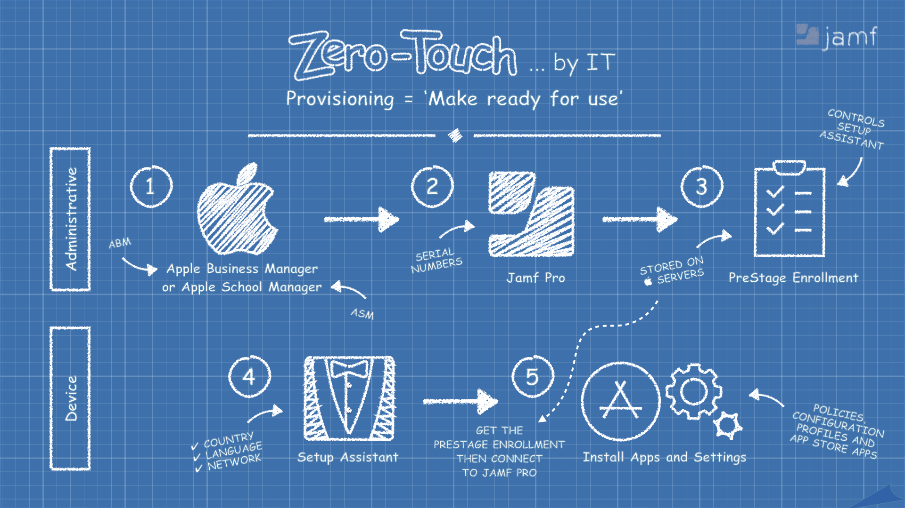
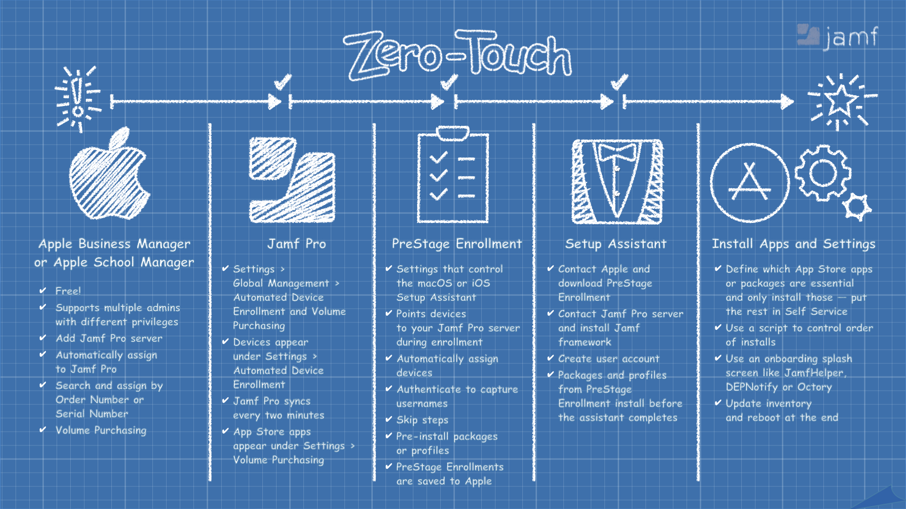

Resources for Jamf's November 2020 webinar

Whether your organization has ten devices or ten thousand, Apple fits easily into your existing infrastructure. Zero-touch deployment allows IT to configure and manage remotely, and IT can tailor the setup process to any team. So every Mac, iPad, iPhone, and Apple TV is ready to go from the start.
https://www.apple.com/business/it/
Video lesson explaining how to connect your Jamf Pro server to your Apple Business Manager account. Connecting Jamf to Apple is a requirement for Zero-Touch enrollment.
Jamf Training Catalog: Integrating with Apple Business Manager
Whether you’re planning a brand new deployment, or adding Apple devices into your existing infrastructure, iPad and Mac fit right in. And now with Microsoft Azure Active Directory support, it’s easier than ever to provide your students and staff with access to key Apple services for teaching and learning. All the apps and services your teachers and students need every day, like Google Drive and Microsoft Office, are available on iPad. And with the countless creative tools iPad offers, students are empowered to express their learning any way they like.
https://www.apple.com/education/k12/it/
Video lesson explaining how to connect your Jamf Pro server to your Apple School Manager account. Connecting Jamf to Apple is a requirement for Zero-Touch enrollment.
Jamf Training Catalog: Integrating with Apple School Manager

A program where customers can test pre-release software products in order to provide Apple with real-world quality and usability feedback. Every device administrator in an Apple Business Manager or Apple School Manager is eligible to participate. Sign up and sign in with the same Apple ID associated to your Enterprise or Education account.
Video lesson overview for preparing a PreStage Enrollment for automated device enrollment.
Jamf Training Catalog: Automated Device Enrollment and PreStage Enrollments
Video lesson overview for integrating Apple's Apps & Books service with Volume Purchasing in Jamf Pro.
Jamf Training Catalog: Volume Purchasing
Video lesson overview for deploying basic scripts with policies in Jamf Pro.
Jamf Training Catalog: Deploy Basic Scripts
This is the same Mac script (iOS devices cannot run scripts) deployed at the end of the video demonstrating a provisioning workflow. Reuse and modify as you like. It includes:
To use this script as-is, modify this section near the beginning of the script to include statuses and custom trigger names for the policies you wish to run in the order they should run. Consider installing security software that may scan activity toward the end of the installation.
# Policy names and policy triggers separated by "," policyList="Installing Google Chrome,maininstallgooglechrome Installing Microsoft Office 2019,maininstallmicrosoftoffice Installing Zoom,main-zoom Setting Time Zone,settimezonechicago"